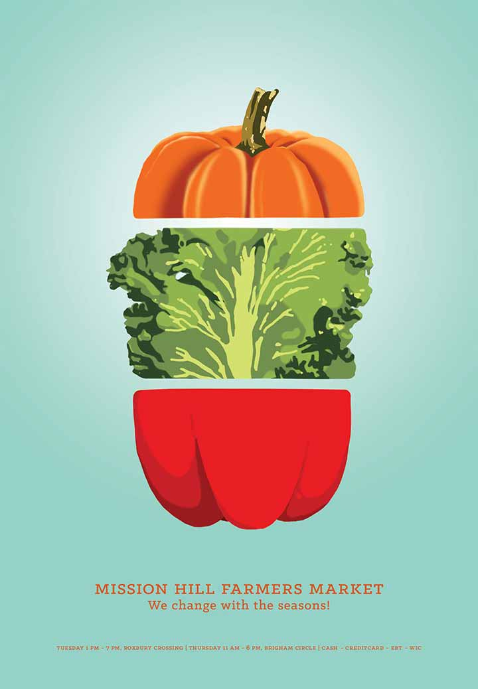
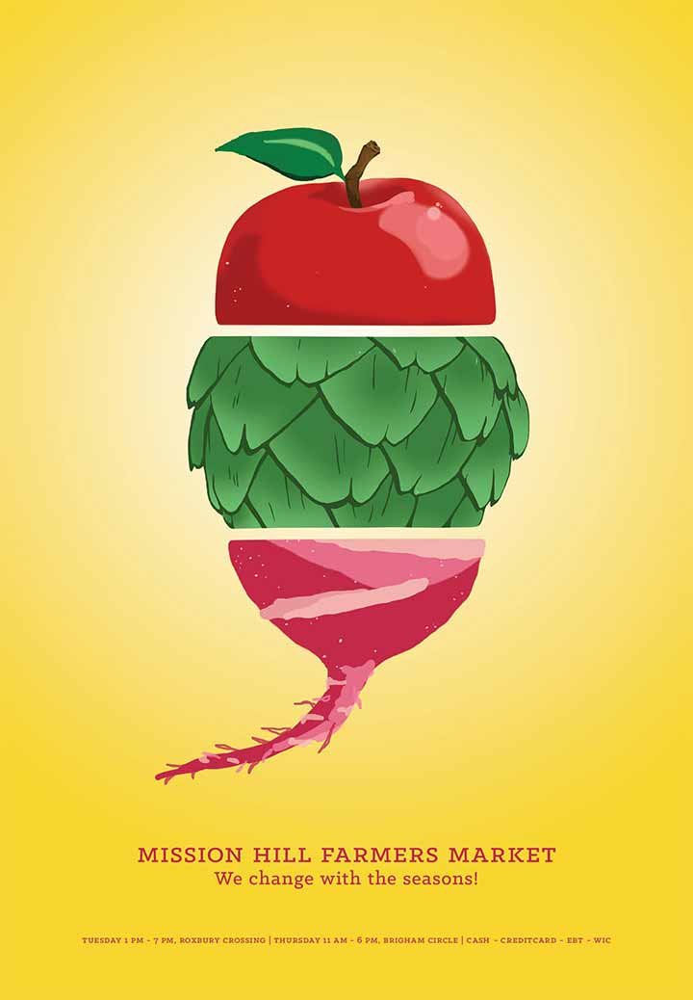
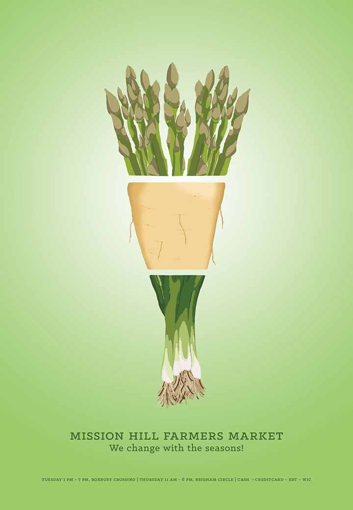

Beetroot water spinach okra water chestnut ricebean pea catsear courgette summer purslane. Water spinach arugula pea tatsoi aubergine spring onion bush tomato kale radicchio turnip chicory salsify pea sprouts fava bean. Dandelion zucchini burdock yarrow chickpea dandelion sorrel courgette turnip greens tigernut soybean radish artichoke wattle seed endive groundnut broccoli arugul.
Farmers Market Advocacy Poster
  